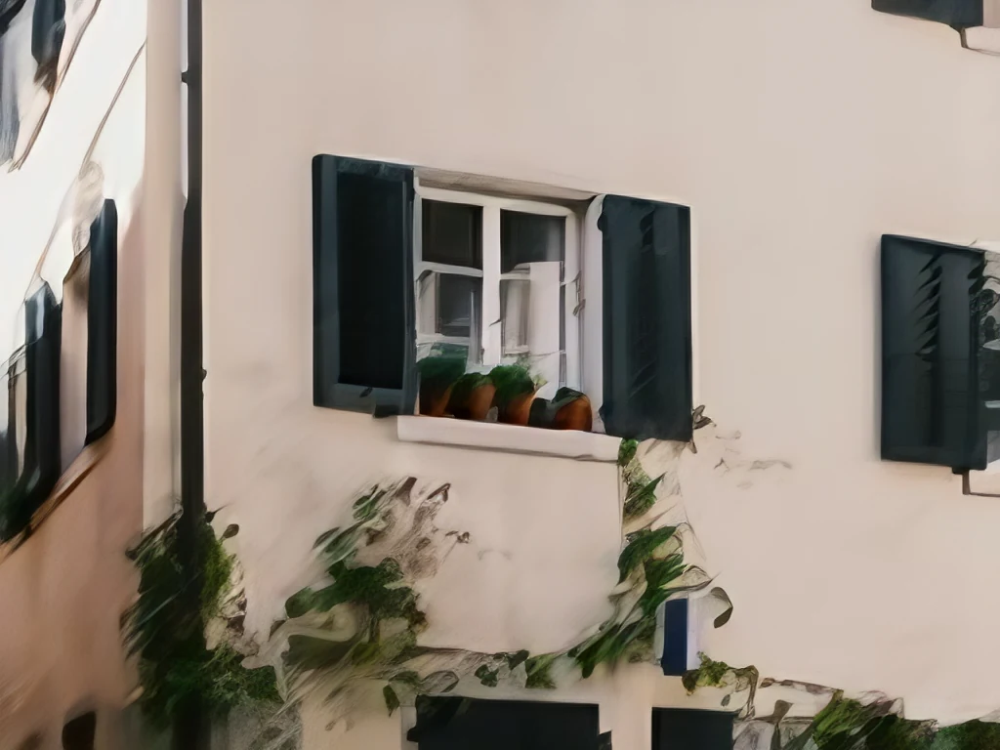

The same photos, damaged in the same way, through both apps. Pick any two results above a photo and drag the divider. The original is in the list too. This compares Upscayl's own models with LocalSR, including some models you load yourself, on simulated damage. "Better" means closer to the original on my test photos, not the best either app can do. How I tested
Blurred photos: LocalSR is clearly better
NAFNet deblur, then Best was closer to the original than Upscayl High Fidelity on 25 of 29 test photos.
Upscayl High FidelityLocalSR NAFNet deblur, then Best
↔
Upscayl High Fidelity
LocalSR NAFNet deblur, then Best
A hiking sign in Belp. Photo by Ivan Prodanov on Unsplash.

Upscayl High FidelityLocalSR NAFNet deblur, then Best
↔
Upscayl High Fidelity
LocalSR NAFNet deblur, then Best
A lane in Zurich's old town. Photo by Tomi Blasic on Unsplash.
Noisy photos: better with an OpenModelDB model
4xRealWebPhoto v4 was closer than Upscayl Standard on 23 of 29. The built-in Best alone only on 7.
Each app used the model that did best on the first half of the test photos. The numbers come from the other half.
Photos
Upscayl
LocalSR
LocalSR closer to the original
Motion blur
High Fidelity
NAFNet, then Best (built in)
25 of 29, clearly better
Sensor noise
Standard
4xRealWebPhoto v4 (OpenModelDB)
23 of 29, better
Sensor noise
Standard
Best (built in)
7 of 29, Upscayl is better
Buildings, lettering
Standard
4xBHI DAT2 real (community)
20 of 24, clearly better
Buildings, lettering
Standard
Best (built in)
16 of 24, a little better
Recompressed JPEG
Standard
1xDeJPG, then Best
12 of 29, about the same
Recompressed JPEG
Standard
4xBHI DAT2 otf (community)
10 of 29, about the same
Recompressed JPEG
Standard
Best (built in)
5 of 29, Upscayl is better
Clean photos
UltraMix Balanced
4xBHI DAT2 real (community)
23 of 29, better
Clean photos
UltraMix Balanced
SwinIR (built in)
15 of 29, about the same
How I tested
Upscayl 2.15.0, the newest release, with its own engine and its seven models, unchanged. LocalSR's models ran through PyTorch and spandrel, like in the app.
60 photos for each kind of damage, from DIV2K and, for buildings, Urban100, cut to 1024 × 768. Each was reduced to a quarter, damaged in the same way for both apps and enlarged 4× again, so the result can be compared with the real original.
The damage is simulated: JPEG at quality 35 and then 55, camera-like noise, or a short motion blur.
The best model of each app was chosen on half the photos and measured on the other half, with DISTS and LPIPS (how close a result looks to the original) and PSNR. The split goes by photo name, so the halves have 31 and 29 photos, or 36 and 24 for buildings. All measurements, with confidence intervals, are in a JSON file.
The photos on this page are separate from the test photos. Models from OpenModelDB and community models are not part of LocalSR, you load them yourself in the model library. The model guide lists every model I measured.